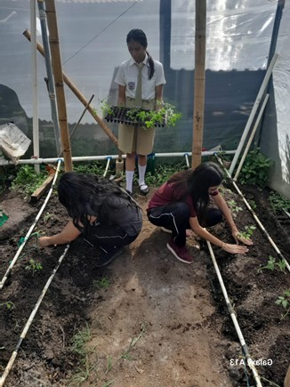

Nuestra Especialidad de Agropecuario
En el Instituto Nacional Ernesto Flores, contamos con la capacidad de ofrecer numerosas oportunidades para quienes eligen esta especialidad. Se realizan diversas actividades de campo con expertos en desarrollo agropecuario.
Entre las actividades que realizamos, destacamos la educación y capacitación en técnicas agrícolas y ganaderas, la promoción de la sostenibilidad, y la investigación en prácticas y tecnologías sostenibles.
También implementamos prácticas de producción sostenible que preservan el medio ambiente y mantenemos la salud del suelo. Proporcionamos formación a los agricultores sobre mejores prácticas y gestión empresarial.
Importancia de la Agricultura en El Salvador
La agricultura en El Salvador es fundamental por varias razones:
- Sustento Económico: Constituye una parte significativa del PIB y genera empleo para una gran parte de la población.
- Cultura y Tradición: Forma parte de la identidad cultural del país, con prácticas y tradiciones que se han transmitido de generación en generación.
- Biodiversidad: La agricultura sostenible ayuda a conservar la biodiversidad y los ecosistemas locales.
Actividades Prácticas en Agropecuario
A continuación, mostramos algunas imágenes de las actividades que se realizan en la especialidad agropecuaria en nuestro instituto:
Los estudiantes participan en la siembra de cultivos, aplicando técnicas agrícolas sostenibles.
Aquí se muestra a los animales.